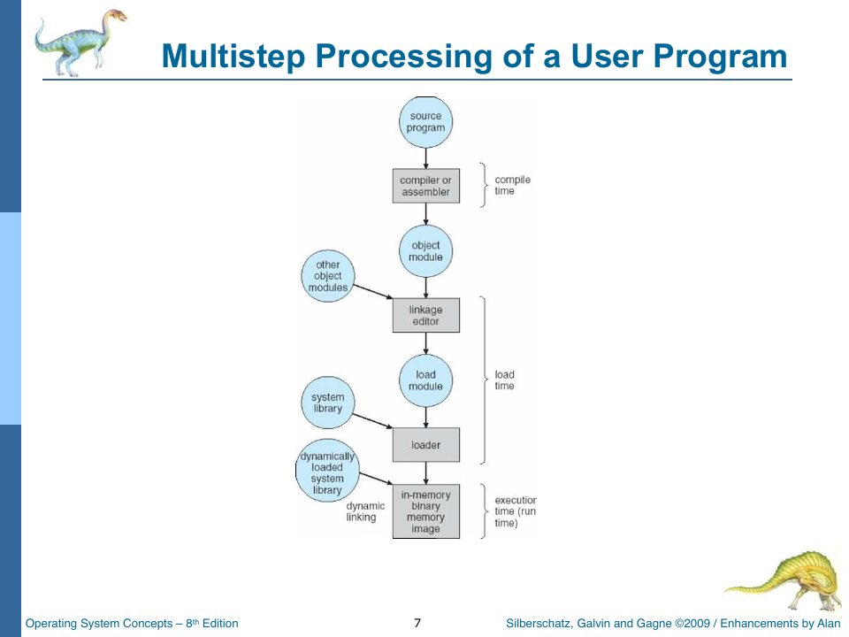
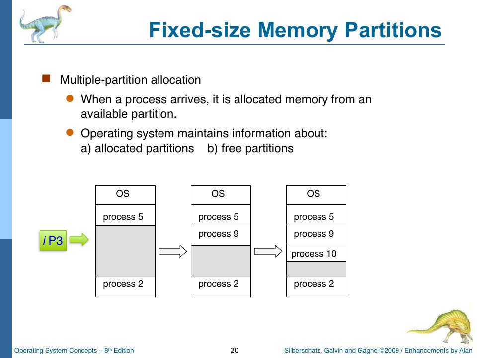

Binding, Base/Limit, and Partitions
Slides: Chapter 8, “Main Memory — Part One,” pp. 554–598. Project Part Three; Lab 011.
Chapter 4 covered the hardware half of memory management: the memory accessor that translates every address. This chapter covers the software half: the memory manager, which decides which process lives where, and the theory of contiguous allocation that it implements.
Address binding
A program refers to memory addresses. At some point those addresses have to be bound to real, physical locations. The question is when (slide p. 559):
| When | How | Slide’s project tag | Example |
|---|---|---|---|
| Compile time | The compiler emits absolute addresses. Move the program and you must recompile. | iP2 | MS-DOS .com files |
| Load time | The compiler emits relocatable code (“42 bytes from the beginning of this module”); the loader fixes up addresses when it knows where the program goes. | iP3 | classic relocating loaders |
| Execution time | Binding is delayed until each access, so “the process can be moved during its execution from one memory segment to another (due to swapping, perhaps).” Needs hardware support: base and limit registers. | iP4 | every modern OS |

The project tags tell a story. In Part Two, with one program always loaded at $0000, compile-time binding is enough: the program’s addresses are physical addresses. In Part Three, with three partitions, a program might land at $0000, $0100, or $0200, so something must relocate it. And in Part Four, with swapping, a process can be rolled out of partition 0 and rolled back into partition 2, in the middle of running, so binding must happen at execution time.
rObSen uses execution-time binding throughout. Programs are written as if they start at $0000; the memory accessor adds the process’s base on every access (Chapter 4). Nothing about the program’s bytes ever changes when it moves. That’s why swapping works at all: Chapter 17’s roll-in can put a process in any free partition, update its PCB’s base and limit, and carry on.
Logical versus physical addresses
“The concept of a logical address space that is bound to a separate physical address space is central to proper memory management” (slide p. 561). A logical (virtual) address is generated by the CPU; a physical address is what the memory hardware sees. Under compile-time and load-time binding they’re the same; under execution-time binding they differ, and the mapping is the MMU’s job. In rObSen, every 6502a address is logical (0–255), physical addresses run 0–767, and the mapping is base + (address & 0xff).
Slide p. 562 adds a careful distinction that rObSen embodies: the relocation (base) value “in the PCB” is OS data, while the relocation register is hardware. In rObSen, PCB.base is the saved copy and _CurrentProcess.base is what the memory accessor reads on each access. Strictly, a dispatcher would load the PCB’s base into a hardware register on each context switch, the same way it loads PC and Acc, and the accessor would read the register. rObSen’s accessor reaches straight into the current PCB instead, which has the same effect.
Dynamic loading and linking
Two related ideas (slides pp. 567–568), neither used by rObSen: dynamic loading doesn’t load a routine until it’s called, and dynamic linking postpones linking a library until run time, using a small stub that finds the library routine the first time it’s called and patches itself. Shared libraries (.dll, .so, .dylib) work this way, and that’s why one copy of a common library can serve every process in memory.
Contiguous allocation and fixed partitions
In contiguous allocation, each process occupies one unbroken range of physical memory (slide p. 571). The simplest version divides memory into fixed-size partitions ahead of time and gives each arriving process a free one (slide p. 573). The OS keeps a table of which partitions are allocated and which are free.

That’s rObSen exactly: three partitions of 256 bytes each, at $0000, $0100, and $0200, as Lab 011 specifies. Here is the whole memory manager:
module TSOS {
interface MemoryPartition {
base: number;
limit: number;
capacity: number;
allocated: boolean;
pid: number | null;
}
export interface MemoryAllocation {
base: number;
limit: number;
size: number;
partition: number;
}
export class MemoryManager {
private readonly partitions: MemoryPartition[];
constructor(
private readonly memory: Memory,
private readonly accessor: MemoryAccessor,
segmentSize: number = Memory.SIZE,
segmentCount: number = 1,
) {
this.partitions = [];
for (let index = 0; index < segmentCount; index++) {
const base = index * segmentSize;
const limit = base + segmentSize - 1;
this.partitions.push({
base,
limit,
capacity: segmentSize,
allocated: false,
pid: null,
});
}
}
public reset(): void {
this.memory.clear();
this.partitions.forEach((partition) => {
partition.allocated = false;
partition.pid = null;
});
}
public allocate(pid: number, size: number): MemoryAllocation | null {
if (size <= 0) {
return null;
}
const partitionIndex = this.partitions.findIndex(
(partition) => !partition.allocated && size <= partition.capacity,
);
if (partitionIndex === -1) {
return null;
}
const partition = this.partitions[partitionIndex];
partition.allocated = true;
partition.pid = pid;
return {
base: partition.base,
limit: partition.limit,
size,
partition: partitionIndex,
};
}
public load(allocation: MemoryAllocation, bytes: number[]): void {
this.accessor.loadBytes(allocation.base, bytes);
const partition = this.partitions[allocation.partition];
const end = partition.base + partition.capacity;
const paddingStart = allocation.base + allocation.size;
for (let address = paddingStart; address < end; address++) {
this.accessor.write(address, 0x00);
}
}
public releaseByPid(pid: number): void {
const partition = this.partitions.find((part) => part.pid === pid);
if (!partition) {
return;
}
this.zeroPartition(partition);
partition.allocated = false;
partition.pid = null;
}
public releaseByBase(base: number): void {
const partition = this.partitions.find((part) => part.base === base);
if (!partition) {
return;
}
this.zeroPartition(partition);
partition.allocated = false;
partition.pid = null;
}
public isAllocated(pid: number): boolean {
return this.partitions.some((partition) => partition.pid === pid);
}
public availableCapacity(): number {
return this.partitions.reduce((total, partition) => {
return partition.allocated ? total : total + partition.capacity;
}, 0);
}
private zeroPartition(partition: MemoryPartition): void {
for (let address = partition.base; address <= partition.limit; address++) {
this.accessor.write(address, 0x00);
}
}
public getFreePartition(): MemoryAllocation | null {
const partitionIndex = this.partitions.findIndex((partition) => !partition.allocated);
if (partitionIndex === -1) {
return null;
}
const partition = this.partitions[partitionIndex];
return {
base: partition.base,
limit: partition.limit,
size: partition.capacity,
partition: partitionIndex,
};
}
public claimPartition(allocation: MemoryAllocation, pid: number): void {
const partition = this.partitions[allocation.partition];
partition.allocated = true;
partition.pid = pid;
}
public releaseAllocation(allocation: MemoryAllocation): void {
const partition = this.partitions[allocation.partition];
this.zeroPartition(partition);
partition.allocated = false;
partition.pid = null;
}
public getPartitionForPid(pid: number): MemoryAllocation | null {
const partitionIndex = this.partitions.findIndex((partition) => partition.pid === pid);
if (partitionIndex === -1) {
return null;
}
const partition = this.partitions[partitionIndex];
return {
base: partition.base,
limit: partition.limit,
size: partition.capacity,
partition: partitionIndex,
};
}
}
}
The partition table is an array of records (Chapter 11a covers the interface syntax), built once in the constructor: partition i has base = i × 256 and limit = base + 255. The operations:
allocate(pid, size): find the first unallocated partition with enough capacity (findIndex), mark it allocated to this PID, and return an allocation record. If none fits, returnnull. Taking the first free partition is first fit, although with identical partitions every fit strategy picks the same one.load(allocation, bytes): copy the program in through the memory accessor, then write zeros over the rest of the partition.releaseByPid(pid): zero the partition and mark it free.getFreePartition/claimPartition: a two-step version ofallocateused by the swapper, which needs to know where a process will go before it commits to putting it there (Chapter 17).reset: clear all of memory and free every partition. The shell’sclearmemcommand calls it, but only when no process is resident, which answers the spec’s question, “What should happen if the user tries to clearmem while processes are running?”: it refuses.
Zeroing: a security feature in disguise
load zero-fills the end of the partition, and releaseByPid zeroes the whole partition. That’s not just tidiness. Without it, a new process loaded into a partition could read whatever the previous occupant left behind. Real operating systems do the same: Chapter 9’s slides (p. 666) describe handing out pages from a pool of “zeroed-out pages… erase the previous contents before giving it to a new process,” called zero-fill on demand. In rObSen the zeroing also has a functional side effect: a program that runs off its end executes 00 (BRK) and exits cleanly.
Dead code
Five of the memory manager’s methods are never called anywhere in rObSen: releaseByBase, isAllocated, availableCapacity, releaseAllocation, and getPartitionForPid. They’re the kind of complete-looking API that a code generator produces in anticipation of needs that never arrive. They do no harm, but they’re surface area to read and maintain. Deleting unused code is one of the cheapest ways to make a codebase easier to understand.
Variable partitions and the dynamic storage-allocation problem
With variable-size partitions (slide p. 574), the OS carves memory into exactly as much as each process needs. Free memory becomes a set of holes of various sizes scattered between processes, and each arriving process needs a hole big enough to hold it. Which hole? (Slide p. 575.)
- First fit: the first hole that’s big enough.
- Best fit: the smallest hole that’s big enough; produces the smallest leftover.
- Worst fit: the largest hole; produces the largest leftover.
The slides work an example (pp. 576–587) on a memory of 20 units, with A (4k) at unit 1, B (2k) at 11, and C (3k) at 17 already resident, leaving holes at 5–10, 13–16, and 20. Then D (1k), E (4k), and F (2k) arrive in that order. src/code/sims/fit.ts replays it:
interface Hole { start: number; size: number; }
type Strategy = (holes: Hole[], need: number) => Hole | undefined;
const firstFit: Strategy = (holes, need) => holes.find((h) => h.size >= need);
const bestFit: Strategy = (holes, need) =>
holes.filter((h) => h.size >= need).sort((a, b) => a.size - b.size)[0];
const worstFit: Strategy = (holes, need) =>
holes.filter((h) => h.size >= need).sort((a, b) => b.size - a.size)[0];
$ tsc --target es2022 fit.ts && node fit.js
first fit: D@5 E@6 F@13
best fit: D@20 E@13 F@5
worst fit: D@5 E@6 F@13
These match the slides. Best fit tucks D into the 1k hole at the very end and E into the exactly-sized 4k hole, leaving the big hole for later; first and worst fit both split the big hole. The slides’ verdict (p. 588): “First-fit and best-fit [have] been shown to be better than worst-fit in terms of speed and storage utilization. First-fit is easier to implement.” And Alan’s parenthetical: “I wonder, what’s the ‘Big-oh’ of those operations?” (First fit is O(h) for h holes but often stops early; best and worst fit are O(h) every time unless the hole list is kept sorted by size, which makes each allocation and free O(log h) with a balanced tree.)
Fragmentation
Two kinds (slides pp. 591–596):
- External fragmentation: there’s enough free memory in total, but it isn’t contiguous. Variable partitions suffer from this. A 3k process can’t run in two separate 2k holes.
- Internal fragmentation: a process is given more memory than it asked for, and the excess, inside its allocation, is wasted. Fixed partitions suffer from this.
rObSen’s fixed partitions have no external fragmentation (any free partition fits any program up to 256 bytes) and severe internal fragmentation. The counting program used to test swapping in Chapter 17 is 22 bytes long, so each copy wastes 234 of its 256 bytes, or about 91%. Three such processes use 66 bytes of a 768-byte memory, and the fourth still has to be swapped to disk.
The cure for external fragmentation is compaction: shuffle processes together to merge the holes. That needs execution-time binding (you’re moving running processes), and it’s slow, and it’s awkward while I/O is in progress. The cure for both kinds at once is paging: chop memory into small fixed-size frames, and let a process occupy any frames, not necessarily adjacent ones. That’s the subject of Chapter 18.
Check yourself
- Under rObSen’s scheme, what’s the largest program you can load? What happens if you try to load something larger?
- Why does swapping (Project Part Four) require execution-time rather than load-time binding?
- With variable partitions, run the slide example using next fit (like first fit, but each search starts where the previous one ended). Where do D, E, and F go?
Answers
- 256 bytes. A larger program passes
shellLoad’s size check (which compares with all 768 bytes), fails to find a partition, needlessly swaps out a resident process, and then reports “insufficient memory” (Chapter 9). - Because a swapped-out process may come back into a different partition. With load-time binding, its addresses were fixed up for the old location when it was first loaded. Execution-time binding re-applies the (new) base on every access, so the process doesn’t care where it lands.
- D goes to 5 (the first fit from the start), leaving the search at 6. E fits at 6–9; the search continues from 10. F (2k) doesn’t fit the 1k hole at 10, so it goes on to 13. Same as first fit for this example, though next fit diverges from first fit on longer request sequences.